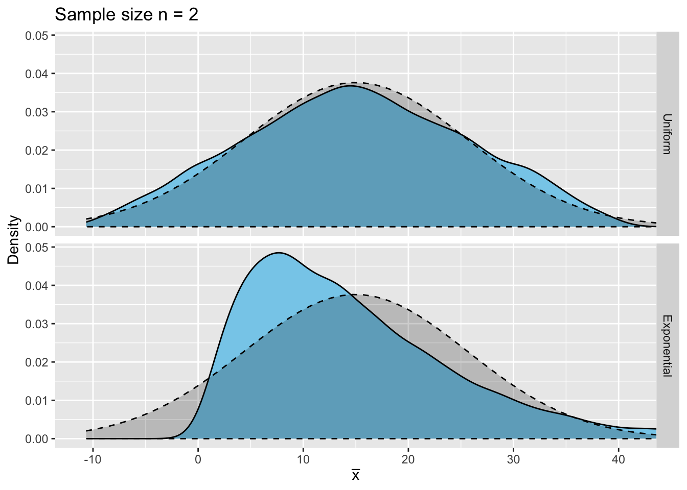
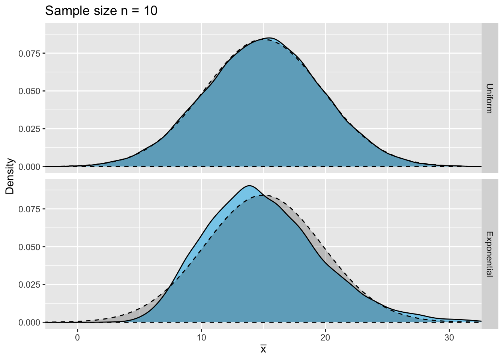
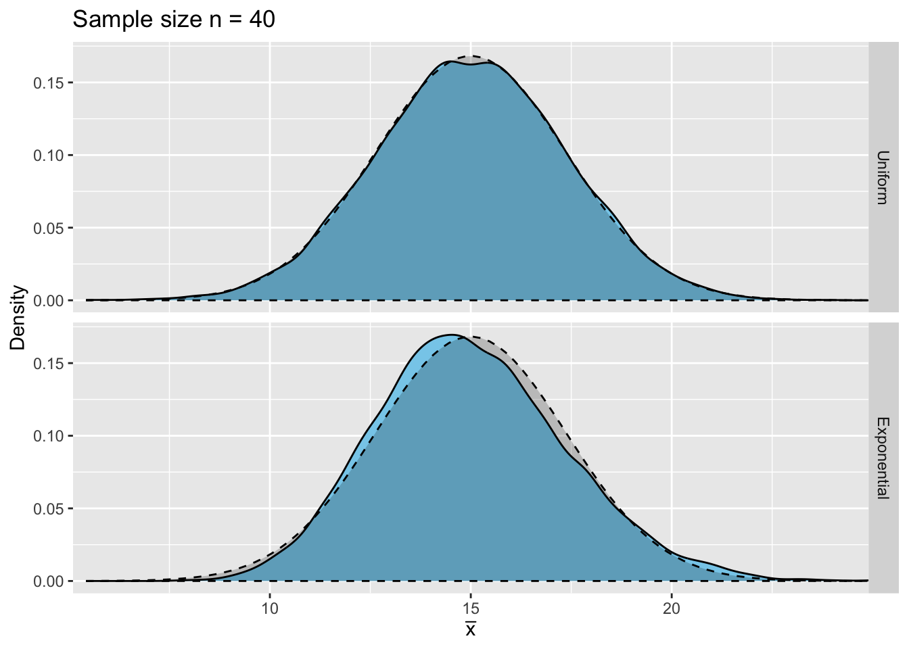
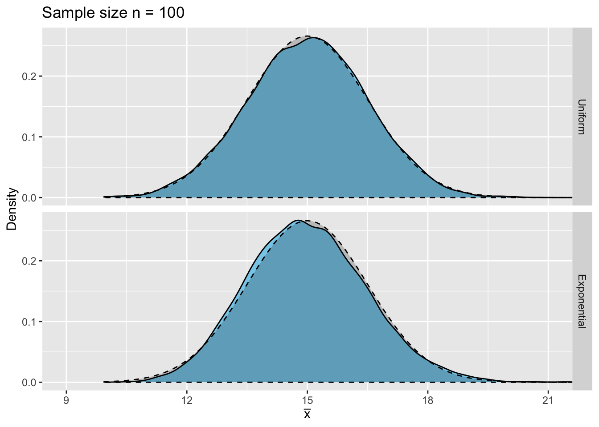

S2S Lab 6
1 Sampling Distribution of \(\bar{X}\)
Suppose we were to take multiple random samples, each of the same size, from a distribution. We would be able to calculate the mean of each sample, or sample mean, and be left with many different values of \(\bar X\). The distribution of all of these sample means is called the sampling distribution of \(\bar X\).
1.1 Central Limit Theorem
An important result regarding the sampling distribution of \(\bar X\) is that, provided the sample size is sufficiently large, the sampling distribution of \(\bar X\) will follow a normal distribution. For this to be true, the random variable \(X\) does not need to follow a normal distribution itself. This result is know as the Central Limit Theorem.
Formally, for a random variable \(X\) which follows any distribution with known mean, \(\mu\), and standard deviation, \(\sigma\), then
\[ Z=\frac{\bar X-\mu}{\frac{\sigma}{\sqrt{n}}}\sim N(0,\, 1) \] as \(n\rightarrow\infty\).
This can be rephrased to say that the sampling distribution of \(\bar X\) is approximately \(N\Big(\mu,\,\frac{\sigma}{\sqrt{n}}\Big)\), provided the size of the sample taken, \(n\), is sufficiently large.
This term sufficiently large should make you wonder, how big does a sample need to be to be considered sufficiently large? This actually depends on the distribution that the random variable \(X\) follows.
Let's look at an example of sampling from different distributions to determine how big a sample we need for the sampling distribution of \(\bar X\) to be considered normal. Specifically, we will sample from the \(\mbox{Unif}(-11,\, 41)\) and \(\mbox{Expo}\Big(\textstyle\frac{1}{15}\Big)\) distributions. Note that both these distributions have mean and standard deviation approximately equal to 15 - you should try and show this yourself!
If we were to take samples of size \(n=2\) from the \(\mbox{Unif}(-11,\, 41)\) distribution, what distribution would \(\bar X\) follow, according to the Central Limit Theorem?
If \(X\sim\mbox{Unif}(-11,\, 41)\), then we can show that,
- \(E[X]=15=\mu\)
- \(sd(X)\approx 15=\sigma\)
We can then use these values to show that, according to the Central Limit Theorem,
\[ \bar X\sim N\Big(15,\,\textstyle\frac{15}{\sqrt{2}}\Big) \]
If we were to take samples of size \(n=2\) from the \(\mbox{Expo}\Big(\textstyle\frac{1}{15}\Big)\) distribution, what distribution would \(\bar X\) follow, according to the Central Limit Theorem?
If \(X\sim \mbox{Expo}\Big(\textstyle\frac{1}{15}\Big)\), then we can show that,
- \(E[X]=15=\mu\)
- \(sd(X)=15=\sigma\)
We can then use these values to show that, according to the Central Limit Theorem,
\[ \bar X\sim N\Big(15,\,\textstyle\frac{15}{\sqrt{2}}\Big) \]
To see if the sampling distribution of \(\bar X\) is indeed normal, with mean \(\mu=15\) and standard deviation \(\sigma=\textstyle\frac{15}{\sqrt{2}}\), we want to draw \(m=10,000\) random samples of size \(n=2\) from both the \(\mbox{Unif}(-11,\, 41)\) and \(\mbox{Expo}\Big(\textstyle\frac{1}{15}\Big)\) distributions and use these samples to calculate 10,000 values of the mean, \(\bar x\). We can then plot the distribution of these sample means and compare it to the \(N\Big(15,\,\textstyle\frac{15}{\sqrt{2}}\Big)\) distribution for both cases.
To start with, let's set up two empty vectors, means_unif_2 and means_expo_2, which will be used to store each of the 10,000 means calculated from samples taken from the Uniform and Exponential distributions respectively. This is done using the function numeric() which creates an empty vector with length equal to the value you provide as the argument, in this case m = 10,000.
To draw the samples from each distribution and calculate the mean, a for loop is used. For the Uniform distribution, runif() is used to draw a random sample of size \(n=2\) from the \(\mbox{Unif}(-11,\, 41)\) distribution, and then the function mean() is used to calculate the mean of these two values. The for loop stores this mean as one of the values in the vector means_unif_2, and repeats until 10,000 random samples have been drawn and used to calculate a mean.
The same process is used to draw the samples from the Exponential distribution, except the function rexp() is used to draw the random samples (for more details on probability functions, refer to Lab 3).
for(i in 1:m){
means_unif_2[i] <- mean(runif(n = 2, min = -11, max = 41))
}
for(i in 1:m){
means_expo_2[i] <- mean(rexp(n = 2, rate = 1/15))
}Before we can plot either of these sampling distributions using ggplot2, the sample means need to be stored within a data frame. The following code creates the data frame, means_2, which has a column storing the value of the mean calculated for each sample, and a second column stating which distribution this sample mean was from.
means_2 <- data.frame(mean = c(means_unif_2, means_expo_2),
distribution = rep(c("Uniform", "Exponential"), each = m))
means_2$distribution <- factor(x = means_2$distribution,
levels = c("Uniform", "Exponential"))
head(means_2)| mean | distribution |
|---|---|
| 15.717109 | Uniform |
| 25.693907 | Uniform |
| 26.798285 | Uniform |
| 3.354951 | Uniform |
| 23.204408 | Uniform |
| 26.569319 | Uniform |
Now, we are ready to plot the two sampling distributions of \(\bar X\) from the \(\mbox{Unif}(-11,\, 41)\) and \(\mbox{Expo}\Big(\textstyle\frac{1}{15}\Big)\) distributions. This is done using ggplot2 in the following code.
ggplot(data = means_2) +
geom_density(aes(x = mean), fill = "skyblue") +
facet_grid(distribution ~ .) +
coord_cartesian(xlim = c(-11, 41)) +
labs(title = "Sample size n = 2",
x = expression(bar(x)), y = "Density") +
stat_function(fun = dnorm, args = list(mean = 15, sd = 15/sqrt(2)), col = "black",
linetype = 2, fill = "black", alpha = 0.2, geom = "area")Let's take a look at each layer in turn.
geom_density(): this tellsggplot2that we want to create a kernel density estimate of the means stored within the data framemeans_2, along the x-axis.facet_grid(): becausemeans_2stores the means for samples taken from both the Uniform and Exponential distributions, we want two different plots of the sampling distribution of \(\bar X\) from each. Here we specify that we want each row of plots to be for a different distribution.coord_cartesian(): we can specify the range of values we want to show along the x-axis and limit this range to a sensible one to show the full scope of each distribution.labs(): this allows us to give the plots some axes labels and a title.stat_function(): this superimposes a defined function above the density plots already created. According to the Central Limit Theorem, the sampling distribution of \(\bar X\) from both the \(\mbox{Unif}(-11,\, 41)\) and \(\mbox{Expo}\Big(\textstyle\frac{1}{15}\Big)\) distributions should be approximately \(N\Big(15, \textstyle\frac{15}{\sqrt{2}}\Big)\) when the sample size is \(n=2\), so this is the distribution we want to show.
Using stat_function() as a layer in a ggplot2 plot allows you to draw any defined function above the rest of the figure. This is useful when you want to include plots of data which are not from the data frame provided in the data = argument of the ggplot() function. The arguments that stat_function() can be supplied with are:
fun =: this is the name of the function in R that will calculate the values to be plotted against different values along the x-axis. If you wish to plot a probability distribution, then use the name of the function that calculates the corresponding values of the probability density function (PDF) e.g. for the normal distribution, usednorm, or for the exponential distribution, usedexp.args =: this is a list of all the argument values to be provided the R function named in thefun =argument. Different functions will require different arguments, so check that the ones you provide make sense with the function you've stated in thefun =argument.geom =: this is the name of the geometric object you want to use to show the data. Examples include"area"to plot the area under the curve,"point"to plot points representing the value at different points along the x-axis, or"polygon"to plot the area between the minimum value along the x-axis, the maximum value and the area under the curve.col =: this is the colour to use for the line on the plot representing the function.linetype =: this is an integer value indicating which style of line you would like to plot.fill =: this is the colour to be used to fill in the area under the curve. In order for this to be used, the argument `geomalpha =: this sets the opacity of the fill colour. You can set this argument to be any value between 0 and 1 - a value of 1 means the colour will be fully opaque and a value of 0 means the colour will be transparent.
The code above produces the following two plots.

Do you think the the sampling distribution of \(\bar X\), when samples of size \(n=2\) are taken from the \(\mbox{Unif}(-11,\,41)\) distribution, is approximately normal?
What about the sampling distribution of \(\bar X\) when samples of size \(n=2\) are taken from the \(\mbox{Expo}\Big(\textstyle\frac{1}{15}\Big)\) distribution - is it approximately normal?
It seems that a sample size of \(n=2\) is not sufficiently large to give a sampling distribution of \(\bar X\) which follows the normal distribution, when we are sampling from the Exponential distribution. In order for the Central Limit Theorem to hold true then, we need to take larger samples from the \(\mbox{Expo}\Big(\textstyle\frac{1}{15}\Big)\) distribution.
Let's take samples of size \(n=10\) and \(n=40\) from both the \(\mbox{Unif}(-11,\, 41)\) and \(\mbox{Expo}\Big(\textstyle\frac{1}{15}\Big)\) distributions, to investigate how the sample size affects the sampling distribution of \(\bar X\).
In the code below, we take 10,000 random samples of size \(n=10\) from the Uniform and Exponential distributions and then save the mean of each sample in either the vector means_unif_10, if the sample was taken from the Uniform distribution, or means_expo_10, if the sample was from the Exponential distribution.
means_unif_10 <- numeric(m)
means_expo_10 <- numeric(m)
for(i in 1:m){
means_unif_10[i] <- mean(runif(n = 10, min = -11, max = 41))
}
for(i in 1:m){
means_expo_10[i] <- mean(rexp(n = 10, rate = 1/15))
}Similarly, we can take samples of size \(n=40\) from each distribution and save the mean of each sample in a vector using the following code.
means_unif_40 <- numeric(m)
means_expo_40 <- numeric(m)
for(i in 1:m){
means_unif_40[i] <- mean(runif(n = 40, min = -11, max = 41))
}
for(i in 1:m){
means_expo_40[i] <- mean(rexp(n = 40, rate = 1/15))
}Complete the code below to draw 10,000 samples of size \(n=100\) from the \(\mbox{Unif}(-11,\,41)\) distribution, and another 10,000 samples of size \(n=100\) from the \(\mbox{Expo}\Big(\textstyle\frac{1}{15}\Big)\) distribution.
means_unif_100 <- numeric(m)
means_expo_100 <- numeric(m)for( i in){
means_unif_100[] <- mean((n =, min = -11, max = 41))
}
for( i in){
means_expo_100[] <- mean((n =, rate =))
}
Now that we have all of the sample means saved in various vectors, we will need to compile them all into a data frame in order for us to be able to plot their respective distributions using ggplot2. The code below creates the data frame means, which stores each sample mean, along with the distribution the sample was taken from and the size of the sample.
Note that we are including the sample means from the samples of size \(n=2\) in this data frame for completeness.
means <- data.frame(mean = c(means_unif_2, means_expo_2,
means_unif_10, means_expo_10,
means_unif_40, means_expo_40,
means_unif_100, means_expo_100),
distribution = rep(rep(c("Uniform", "Exponential"), each = m),
times = 4),
size = rep(c("n = 2", "n = 10", "n = 40", "n = 100"), each = 2*m))
means$distribution <- factor(means$distribution, levels = c("Uniform", "Exponential"))
means$size <- factor(means$size, levels = c("n = 2", "n = 10", "n = 40", "n = 100"))We can then plot the two sampling distributions of \(\bar X\) from the \(\mbox{Unif}(-11,\, 41)\) and \(\mbox{Expo}\Big(\textstyle\frac{1}{15}\Big)\) distributions when the sample size is \(n=10\) using the code below. We have to subset the data from means to show only the means which are from a sample size of \(n=10\). Also, because the sample size has changed, the distribution that the Central Limit Theorem states \(\bar X\) will follow in both cases is now \(N\Big(15,\,\textstyle\frac{15}{\sqrt{10}}\Big)\), so this is the distribution we want to superimpose using stat_function().
ggplot(data = subset(means, subset = (size == "n = 10"))) +
geom_density(aes(x = mean), fill = "skyblue") +
facet_grid(distribution ~ .) +
coord_cartesian(xlim = c(-1, 31)) +
labs(title = "Sample size n = 10",
x = expression(bar(x)), y = "Density") +
stat_function(fun = dnorm, args = list(mean = 15, sd = 15/sqrt(10)), geom = "area",
col = "black", linetype = 2, fill = "black", alpha = 0.2)
We can also show the sampling distributions of \(\bar X\) from the Uniform and Exponential distributions when the sample size is \(n=40\). This done using the code below. Again, note that the distribution the Central Limit Theorem states the sampling distribution of \(\bar X\) will follow is now \(N\Big(15,\,\textstyle\frac{15}{\sqrt{40}}\Big)\) because the sample size has changed.
ggplot(data = subset(means, subset = (size == "n = 40"))) +
geom_density(aes(x = mean), fill = "skyblue") +
facet_grid(distribution ~ .) +
coord_cartesian(xlim = c(6, 24)) +
labs(title = "Sample size n = 40",
x = expression(bar(x)), y = "Density") +
stat_function(fun = dnorm, args = list(mean = 15, sd = 15/sqrt(40)), geom = "area",
col = "black", linetype = 2, fill = "black", alpha = 0.2)
Complete the code below to plot the sampling distribution of \(\bar X\) for the samples of size \(n=100\) taken from the \(\mbox{Unif}(-11,\, 41)\) and \(\mbox{Expo}\Big(\textstyle\frac{1}{15}\Big)\) distributions. Superimpose the normal distribution that each sampling distribution follows according to the Central Limit Theorem.
ggplot(data = subset(means, subset = (size == "n = 100"))) +
(aes(x = mean), fill = "skyblue") +
facet_grid() +
coord_cartesian(xlim = c(9, 21)) +
labs(title = "Sample size n = 100",
x = expression(bar(x)), y = "Density") +stat_function(fun = dnorm, args = list(mean =, sd =),
geom =, col = "black", linetype = 2, fill = "black",
alpha = 0.2)
ggplot(data = subset(means, subset = (size == "n = 100"))) +
geom_density(aes(x = mean), fill = "skyblue") +
facet_grid(distribution ~ .) +
coord_cartesian(xlim = c(9, 21)) +
labs(title = "Sample size n = 100",
x = expression(bar(x)), y = "Density") +
stat_function(fun = dnorm, args = list(mean = 15, sd = 15/sqrt(100)),
geom = "area", col = "black", linetype = 2, fill = "black",
alpha = 0.2)
Section 6.5.1.2 Second Case: Sampling Distribution of \(\bar X\) When \(X\) Is Not a Normal Random Variable of Probability and Statistics with R details a similar example of finding the distribution of \(\bar X\) through sampling.